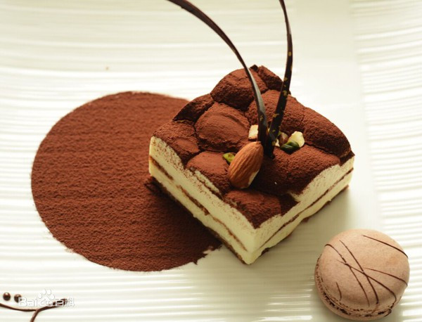

甜品展示

提拉米苏
提拉米苏（Tiramisù），为一种有名的意大利式蛋糕，又可译成堤拉米苏。提拉米苏是由泡过咖啡或兰姆酒的手指饼干，加上一层马斯卡彭、蛋黄、干酪、糖的混合物，然后再在蛋糕表面洒上一层可可粉而成。
戚风蛋糕
戚风蛋糕是一款甜点，属海绵蛋糕类型，制作原料主要有菜油、鸡蛋、糖、面粉、发粉等。但是由于缺乏牛油蛋糕的浓郁香味，戚风蛋糕通常需要味道浓郁的汁、或加上巧克力、水果等配料。
黑森林蛋糕
黑森林蛋糕(Schwarzwälder Kirschtorte)是德国著名甜点，制作原料主要有脆饼面团底托、鲜奶油、樱桃酒等。是受德国法律保护的甜点之一，在德文里全名"Schwarzwaelder" 即为黑森林。它融合了樱桃的酸、奶油的甜、樱桃酒的醇香。